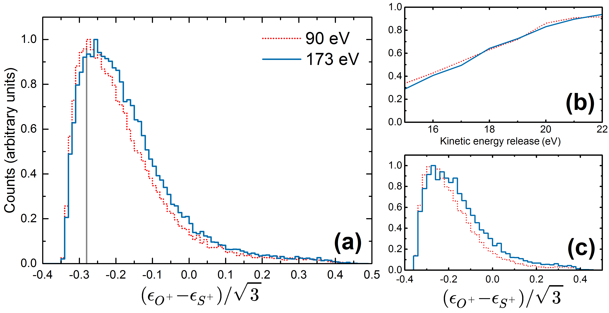
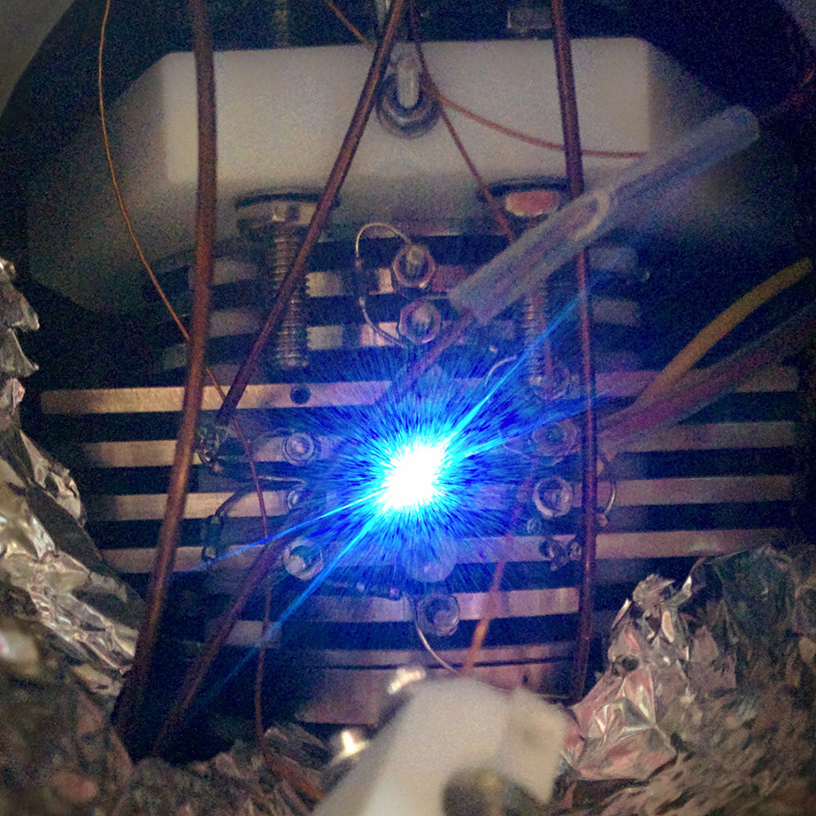

Hi I am a graduate student pursuing an accelerated MSc with the Department of Physics & Astronomy at the University of Waterloo. I am interested in the applications of ultrafast lasers, computational modelling. All while adhering to the principles of open science.
Recent news
- Revised and submitted our paper on ultrafast molecular dynamics.
- Gave a talk at Photonics North 2016 in Quebec City.

About Me
In the lab I use ultrafast lasers to create molecular movies, study molecular dynamics, and synthesize new molecules and materials. For my thesis, I am developing a framework for creating molecular movies from Coulomb explosion imaging experiments. In the spirit of open and reproducible science, I plan to make my data, code, and complete analysis methods publicly available so that other groups may benefit from it.
I am passionate about teaching and have recently started Project Lovelace, an online platform for students to learn about scientific computing by solving challenging real-world problems. This fall term I am also excited to combine my love for food and cooking with teaching thermodynamics! I also volunteer with Frontier College developing educational programs for underpriveleged high-school students.
When I am not doing science, I enjoy cooking new dishes, listening to history podcasts, and coss-country biking.
Research projects
Ultrafast molecular dynamics probed by synchrotron radiation
Etiam sed quam elementum, ullamcorper urna a, lobortis massa. Quisque vel nulla in magna elementum egestas vitae a. la neque nisl, pellentesque sed augue nec, pellentesque efficitur orci. Quisque ornare imperdiet tempus. Fusce suscipit faucibus nunc. Aliquam nec bibendum nisi. Class aptent taciti sociosqu ad litora torquent per conubia nostra, per inceptos himenaeos. Ut convallis a nisl nec viverra. Nam scelerisque at nibh et efficitur.



A framework for creating molecular movies
Etiam sed quam elementum, ullamcorper urna a, lobortis massa. Quisque vel nulla in magna elementum egestas vitae a. la neque nisl, pellentesque sed augue nec, pellentesque efficitur orci. Quisque ornare imperdiet tempus. Fusce suscipit faucibus nunc. Aliquam nec bibendum nisi. Class aptent taciti sociosqu ad litora torquent per conubia nostra, per inceptos himenaeos. Ut convallis a nisl nec viverra. Nam scelerisque at nibh et efficitur.
Cras commodo sem sed tellus commodo facilisis. Cras sed suscipit sapien. Etiam quis aliquet ex, at mollis lacus. Proin neque ipsum, placerat quis ultrices a, rhoncus a quam. Nulla dui velit, malesuada at metus malesuada, sagittis tincidunt dui. Vivamus at faucibus erat. Nullam nec purus quis nunc facilisis vulputate eget sed sapien. Maecenas lorem justo, hendrerit in arcu at, placerat porta felis. In vitae lacus efficitur, gravida elit quis, fringilla ex.
Easy end-cap control in polyyne synthesis
Polyynes are molecules consisting entirely of sp-hybridized carbon bonds with chemical formula (−C≡C−)n where n > 1. They may be capped on either end by hydrogen or functional groups which could grant exotic properties.
The traditional method of polyyne synthesis, oxidative coupling, is pretty challenging and can be extremely hazardous so
By focusing femtosecond laser pulses at the surface of liquid solvents we were able to easily synthesize long-chain polyynes including methyl-capped polyynes in the case of toluene. This suggests we can easily control the end-cap of polyynes by picking different solvents to irradiate. Conventional polyyne synthesis is a dangerous process and so we hope this will be an easy method of synthesizing all sorts of capped polyynes.
The results are being written up for publication in September.

Irradiation setup.

Polyyne identification by high-performance liquid chromatography.
Synthesis of reduced graphene oxide gels and thin films
Etiam sed quam elementum, ullamcorper urna a, lobortis massa. Quisque vel nulla in magna elementum egestas vitae a. la neque nisl, pellentesque sed augue nec, pellentesque efficitur orci. Quisque ornare imperdiet tempus. Fusce suscipit faucibus nunc. Aliquam nec bibendum nisi. Class aptent taciti sociosqu ad litora torquent per conubia nostra, per inceptos himenaeos. Ut convallis a nisl nec viverra. Nam scelerisque at nibh et efficitur.
Cras commodo sem sed tellus commodo facilisis. Cras sed suscipit sapien. Etiam quis aliquet ex, at mollis lacus. Proin neque ipsum, placerat quis ultrices a, rhoncus a quam. Nulla dui velit, malesuada at metus malesuada, sagittis tincidunt dui. Vivamus at faucibus erat. Nullam nec purus quis nunc facilisis vulputate eget sed sapien. Maecenas lorem justo, hendrerit in arcu at, placerat porta felis. In vitae lacus efficitur, gravida elit quis, fringilla ex.
Ab initio simulations of prebiotic RNA formation on the early Earth
Etiam sed quam elementum, ullamcorper urna a, lobortis massa. Quisque vel nulla in magna elementum egestas vitae a. la neque nisl, pellentesque sed augue nec, pellentesque efficitur orci. Quisque ornare imperdiet tempus. Fusce suscipit faucibus nunc. Aliquam nec bibendum nisi. Class aptent taciti sociosqu ad litora torquent per conubia nostra, per inceptos himenaeos. Ut convallis a nisl nec viverra. Nam scelerisque at nibh et efficitur.
Cras commodo sem sed tellus commodo facilisis. Cras sed suscipit sapien. Etiam quis aliquet ex, at mollis lacus. Proin neque ipsum, placerat quis ultrices a, rhoncus a quam. Nulla dui velit, malesuada at metus malesuada, sagittis tincidunt dui. Vivamus at faucibus erat. Nullam nec purus quis nunc facilisis vulputate eget sed sapien. Maecenas lorem justo, hendrerit in arcu at, placerat porta felis. In vitae lacus efficitur, gravida elit quis, fringilla ex.
Teaching
TA Experience
Publications
Working papers
-
Ultrafast molecular dynamics of dissociative ionization in OCS probed by soft X-ray synchrotron radiation
A. Ramadhan, B. Wales, I. Gauthier, R. Karimi, M. MacDonald, L. Zuin, J. Sanderson
Revisions submitted (2016).
arXiv: 1606.08789 [physics.chem-ph]
Refereed papers
-
A Novel Femtosecond Laser-Assisted Method for the Synthesis of Reduced Graphene Oxide Gels and Thin Films with Tunable Properties
K. Ibrahim, M. Irannejad, M. Hajialamdari, A. Ramadhan, K. Musselman, J. Sanderson, M. Yavuz
Published in Advanced Materials Interfaces 3, 1500864 (2016).
DOI: 10.1002/admi.201500864 -
Ultrafast Light Interaction with Graphene Oxide Aqueous Solution
K. Ibrahim, M. Irannejad, A. Ramadhan, W. Alayak, J. Sanderson, B. Cui, A. Brzezinski, M. Yavuz
Published in Proceedings of the 14th IEEE International Conference on Nanotechnology, 830-831 (2014).
DOI: 10.1109/NANO.2014.6968088 -
Welding of Au Microwires by Femtosecond Laser Irradiation
N. Ly, M. Mayer, A. Ramadhan, and J. Sanderson
Published in Proceedings of the 14th IEEE International Conference on Nanotechnology, 146-149 (2014).
DOI: 10.1109/NANO.2014.6968136 -
Coulomb imaging of the concerted and stepwise break up processes of OCS ions in intense femtosecond laser radiation
B. Wales, É. Bisson, R. Karimi, S. Beaulieu, A. Ramadhan, M. Giguère, Z. Long, W. Liu, J. Kieffer, F. Légaré, J. Sanderson
Published in Journal of Electron Spectroscopy and Related Phenomena 195, 332-336 (2014).
DOI: 10.1016/j.elspec.2014.05.003
Contact
Feel free to get in touch through email (ali.ramadhan-at-uwaterloo-dot-ca) or by using the form here!